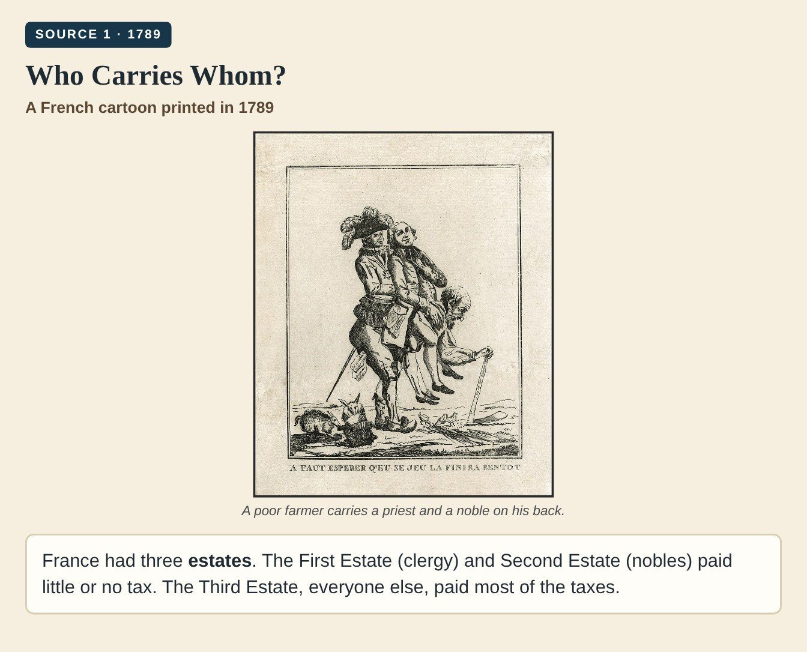

How it works: read the source pages → answer the question about today's big idea → read the fact file → write 1–2 sentences. Done = all parts green, then turn in at the bottom.
Word help (tap to open)
- Estates = the three social classes in old France
- Clergy = church leaders
- Third Estate = everyone who wasn't clergy or a noble, about 97% of the people
- National Assembly = the new lawmaking group the Third Estate created in 1789
- Primary source = something made by people who lived at the time: a letter, a speech, a picture, a law

Click the page to make it bigger.
Turn in your work
Your work saves on this device, so you can come back later. Your teacher sees it after you turn it in.
Sources: French cartoon of the three estates (1789); Abbé Sieyès, What Is the Third Estate? (1789); Jacques-Louis David, Tennis Court Oath drawing (1791); Jean-Pierre Houël, Storming of the Bastille (1789); print of the women's march on Versailles (1789); Jean-Jacques-François Le Barbier, Declaration of the Rights of Man and of the Citizen (1789). Images public domain, via Wikimedia Commons.